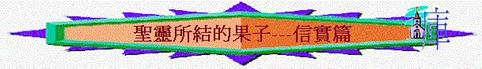

引言
「聖靈所結的果子，就是仁愛、喜樂、和平、忍耐、恩慈、良善、信實、」加5:22
「第一，我靠著耶穌基督，為你們眾人感謝我的神，因你們的信德傳遍了天下。」羅1:8
「我知道你的行為、愛心、信心、勤勞、忍耐，又知道你末後所行的善事，比起初所行的更多。」啟2:19
「親愛的弟兄啊，你們卻要在至聖的真道上造就自己，在聖靈裡禱告，」猶1:20
「不可私拿東西，要顯為忠誠，以致凡事尊榮我們救主神的道。」多2:10
～信實的原文是‘pistis’名詞，和合本有不同的譯法「信」、「信心」、「信德」、「真道」、「信實」、「忠誠」
～而希臘文的‘pistos’則是形容詞，和合本譯「忠心」、「信」、「可信」、「可靠」
～而綜合不同的經文，信實有兩個主要的意思
一.對神及信仰的信心
～英文譯‘faith’、‘belief’
1.信心的定義
「信就是所望之事的實底，是未見之事的確據。」來11:1
A.所望之事的實底
〜「實底」----reality,assurance,substance，有實底，基礎，真實，信能叫人對盼望之事有真實感。
B.未見之事的確據
〜「確據」----conviction，使人深信的意思，人為何對末見之事有肯定把握，你若問他有甚麼証據可証明未見之事的實在，他的答案不是甚麼理性看得見想得通的原因，他的確據就是信，此信心就是証據，也令他更深信。
2.信心的本質
A.是「一信」的
「一主，一信，一洗，」弗4:5
～我們的信仰不是多元化的信仰，只是有一個信念，對獨一的真神的唯一共同的信心
B.是「一點不疑惑」的
「只要憑著信心求，一點不疑惑；因為那疑惑的人，就像海中的波浪，被風吹動翻騰。」雅1:6
「我們因信耶穌，就在他裡面放膽無懼，篤信不疑的來到神面前。」弗3:12
C.是有行為的
「這樣，信心若沒有行為就是死的。」雅2:17
～我們不是靠行為而得救恩，但真實的信心，可以從行為中反映，而有行為的信心更印證那人的信心是真實及對人有益的
3.信心的內容
A.信基督
「好在今時顯明他的義，使人知道他自己為義，也稱信耶穌的人為義。」羅3:26
B.信神的道
「原來藉著神蹟醫好的那人有四十多歲了。」徒14:22
C.信福音
「只要你們行事為人與基督的福音相稱，叫我或來見你們，或不在你們那裡，可以聽見你們的景況，知道你們同有一個心志，站立得穩，為所信的福音齊心努力。」腓1:27
D.信神的應許
「且滿心相信神所應許的必能做成。」羅4:21
4.信心的重要
A.可得稱義
「我們既因信稱義，就藉著我們的主耶穌基督得與神相和。」羅5:1
B.可得潔淨
「又藉著信潔淨了他們的心，並不分他們我們。」徒15:9
C.可得神喜悅
「人非有信，就不能得神的喜悅；因為到神面前來的人必須信有神，且信他賞賜那尋求他的人。」來11:6
「若有疑心而吃的，就必有罪，因為他吃不是出於信心。凡不出於信心的都是罪。」羅14:23
D.可得福氣
「可見那以信為本的人和有信心的亞伯拉罕一同得福。」加3:9
E.可得勝世界
「因為凡從神生的，就勝過世界；使我們勝了世界的，就是我們的信心。」約壹5:4
F.可得堅固
「並且仰望神的應許，總沒有因不信心裡起疑惑，反倒因信心裡得堅固，將榮耀歸給神，」羅4:20
G.可得能力
「[太
17:20]:
耶穌說：「是因你們的信心小。我實在告訴你們，你們若有信心，像一粒芥菜種，就是對這座山說：『你從這邊挪到那邊。』他也必挪去；並且你們沒有一件不能做的事了。」太17:20
H.可得成全
「耶穌就摸他們的眼睛，說：「照著你們的信給你們成全了吧。」」太9:29
I.可生仁愛
「原來在基督耶穌裡，受割禮不受割禮全無功效，惟獨使人生發仁愛的信心才有功效。」加5:6
J.可成亞伯拉罕子孫
「所以，你們要知道：那以信為本的人，就是亞伯拉罕的子孫。」加3:7
5.信心的應用
～我們可以運用神所賜給我們的信心，做以下事情
A.看清自己
「我憑著所賜我的恩對你們各人說：不要看自己過於所當看的，要照著神所分給各人信心的大小，看得合乎中道。」羅12:3
B.發揮恩賜
「按我們所得的恩賜，各有不同。或說預言，就當照著信心的程度說預言，」羅12:6
C.放膽祈禱
「出於信心的祈禱要救那病人，主必叫他起來；他若犯了罪，也必蒙赦免。」雅5:15
D.持守領受
「你有信心，就當在神面前守著。人在自己以為可行的事上能不自責，就有福了。」羅14:22
E.面對患難
「甚至我們在神的各教會裡為你們誇口，都因你們在所受的一切逼迫患難中，仍舊存忍耐和信心。」帖後1:4
F.守住真道
「你從我聽的那純正話語的規模，要用在基督耶穌裡的信心和愛心，常常守著。」提後1:13
G.面對爭戰
「此外，又拿著信德當作藤牌，可以滅盡那惡者一切的火箭；」弗6:16
「但我們既然屬乎白晝，就應當謹守，把信和愛當作護心鏡遮胸，把得救的盼望當作頭盔戴上。」帖前5:8
H.抵擋魔鬼
「你們要用堅固的信心抵擋他，因為知道你們在世上的眾弟兄也是經歷這樣的苦難。」彼前5:9
6.信心的榜樣
「從前引導你們、傳神之道給你們的人，你們要想念他們，效法他們的信心，留心看他們為人的結局。」來13:7
A.信神的說話----行神旨意----得神喜悅(來11:4-7)
a.亞伯獻祭與神
「亞伯因著信，獻祭與神，比該隱所獻的更美，因此便得了稱義的見證，就是神指他禮物作的見證。他雖然死了，卻因這信，仍舊說話。」來11:4
〜亞伯應是先知(根據太23:34-35)，他從天上得啟示，知道怎樣獻祭，怎樣行得好才能得神喜悅，因他深信神的意思，所以他們行所獻的行神心意，所作的比該隱更美，得神稱義，看為好。
b.以諾與神同行
「以諾因著信，被接去，不至於見死，人也找不著他，因為神已經把他接去了；只是他被接去以先，已經得了神喜悅他的明證。人非有信，就不能得神的喜悅；因為到神面前來的人必須信有神，且信他賞賜那尋求他的人。」來11:5-6
「以諾活到六十五歲，生了瑪土撒拉。以諾生瑪土撒拉之後，與神同行三百年，並且生兒養女。」創5:21-22
〜以諾生了瑪土撒拉後與神同行，瑪土撒拉的意恩是死後有洪水，明顯以諾得了神的啟示，知道神有審判，所以他深信(但未發生及未見到)神的啟示，所以行神的旨意，與神同行，過義的生活，所以神喜悅他將他接去。也引伸人非有信就不能得神的喜悅之真理
c.挪亞預備之舟
「挪亞因著信，既蒙神指示他未見的事，動了敬畏的心，預備了一隻方舟，使他全家得救。因此就定了那世代的罪，自己也承受了那從信而來的義。」來11:7
〜挪亞也得了神的啟示，他深信所以行神的旨意，預備方舟，所以神悅納他，看他為義了。
B.信神的應許----彷如看見----盼望將來(來11:8-22)
〜以下的人物，有共通特色，至死仍未得著列應許，但他們仍從遠處看見，歡然等候將來更美的臨到。
a.亞伯拉罕
(1)等候將來的美城
「亞伯拉罕因著信，蒙召的時候就遵命出去，往將來要得為業的地方去；出去的時候，還不知往那裡去。他因著信，就在所應許之地作客，好像在異地居住帳棚，與那同蒙一個應許的以撒、雅各一樣。因為他等候那座有根基的城，就是神所經營所建造的。」11:8-10
「這些人都是存著信心死的，並沒有得著所應許的；卻從遠處望見，且歡喜迎接，又承認自己在世上是客旅，是寄居的。說這樣話的人是表明自己要找一個家鄉。他們若想念所離開的家鄉，還有可以回去的機會。他們卻羨慕一個更美的家鄉，就是在天上的。所以神被稱為他們的神，並不以為恥，因為他已經給他們預備了一座城。」來11:13-16
〜亞作拉罕因信神的應許，所以離開吾珥，過寄居生活，他到死仍未得著應許，但仍信彷如看見，並歡喜迎接更美的家鄉，所以他的生命不羞辱神，沒令神感羞恥。
(2)等候後裔的顯多
「因著信，連撒拉自己，雖然過了生育的歲數，還能懷孕，因他以為那應許他的是可信的。所以從一個彷彿已死的人就生出子孫，如同天上的星那樣眾多，海邊的沙那樣無數。」來11:11-12
(3)等候兒子的復活
「亞伯拉罕因著信，被試驗的時候，就把以撒獻上；這便是那歡喜領受應許的，將自己獨生的兒子獻上。論到這兒子，曾有話說：「從以撒生的才要稱為你的後裔。」他以為神還能叫人從死裡復活；他也彷彿從死中得回他的兒子來。」來11:17-19
〜亞伯拉罕獻以撒時，他有信心神不會叫他兒子死去，因為他深信神的應許，以撒的後裔才是他的後裔，所以他以為自己即使殺了以撒後，神仍能叫他復活，所以他對以撒的將來是有憧憬的。
b.以撒、雅各、約瑟
「以撒因著信，就指著將來的事給雅各、以掃祝福。雅各因著信，臨死的時候，給約瑟的兩個兒子各自祝福，扶著杖頭敬拜神。約瑟因著信，臨終的時候，提到以色列族將來要出埃及，並為自己的骸骨留下遺命。」來11:20-22
〜他們到臨死前，仍深信神的應許，所以為他的子孫兄弟祝福，深信神的福氣及應許終不落空，對前景是樂觀的(雖至死也見不到)
C.信更大獎賞----分別出來----得神拯救(來11:23-31)
〜11:23-32提及以色列民離開埃及的日子，埃及給人的感覺是富庶、強盛，但選民深信神要召他們離開，他們深信這離開是好的，為要得更大自由及更大獎賞，結果他們憑信分別出來，終得神拯救。
a.因信摩西得拯救
「摩西生下來，他的父母見他是個俊美的孩子，就因著信，把他藏了三個月，並不怕王命。」來11:23
b.因信摩西願離開
「摩西因著信，長大了就不肯稱為法老女兒之子。他寧可和神的百姓同受苦害，也不願暫時享受罪中之樂。他看為基督受的凌辱比埃及的財物更寶貴，因他想望所要得的賞賜。他因著信，就離開埃及，不怕王怒；因為他恆心忍耐，如同看見那不能看見的主。」來11:24-27
c.因信選民同守節
「他因著信，就守（或作：立）逾越節，行灑血的禮，免得那滅長子的臨近以色列人。」來11:28
〜守節代表與埃及人分別出來，免受殺長子之災
d.因信選民過紅海
「他們因著信，過紅海如行乾地．．．．．．」來11:29
e.因信選民進迦南
「以色列人因著信，圍繞耶利哥城七日，城牆就倒塌了。」來11:30
〜耶利哥是選民過迦南的第一個城，是甚難進入，但他們有信心，如耶利哥城牆也倒塌。
f.因信妓女不順從
「妓女喇合因著信，曾和和平平的接待探子，就不與那些不順從的人一同滅亡。」來11:31
〜妓女願與自己百姓分別出來，不順從他們，反協助探子，她也終得救。
D.信神的幫助----勇敢制敵----得神幫助(來11:32-34)
「我又何必再說呢？若要一一細說，基甸、巴拉、參孫、耶弗他、大衛、撒母耳，和眾先知的事，時候就不夠了。他們因著信，制伏了敵國，行了公義，得了應許，堵了獅子的口，滅了烈火的猛勢，脫了刀劍的鋒刃；軟弱變為剛強，爭戰顯出勇敢，打退外邦的全軍。」來11:32-34
〜這些人物特色是遇困難、仇敵，但因信有勇敢，得神幫助可以制伏敵人。
E.信更美復活----忍受試探----得更美事(來11:35-40)
「有婦人得自己的死人復活。又有人忍受嚴刑，不肯苟且得釋放（原文作贖），為要得著更美的復活。又有人忍受戲弄、鞭打、捆鎖、監禁、各等的磨煉，被石頭打死，被鋸鋸死，受試探，被刀殺，披著綿羊山羊的皮各處奔跑，受窮乏、患難、苦害，在曠野、山嶺、山洞、地穴，飄流無定，本是世界不配有的人。」11:35-38
〜這些人共通點是信有復活，所以能忍受各種苦難、嚴刑
二.能讓人信靠的個性
～和合本多譯「信實」、「忠心」、「忠誠」字眼
1.神的屬性
A.父神
a.沒有是而又非
「我指著信實的神說，我們向你們所傳的道，並沒有是而又非的。」林後1:18
b.所說的必成就
「那召你們的本是信實的，他必成就這事。」帖前5:24
B.基督
a.忠實見證
「並那誠實作見證的、從死裡首先復活、為世上君王元首的耶穌基督，有恩惠、平安歸與你們！他愛我們，用自己的血使我們脫離（有古卷：洗去）罪惡，」啟1:5
b.忠於所託
「他為那設立他的盡忠，如同摩西在神的全家盡忠一樣。」來3:2
c.值得信賴
「所以，他凡事該與他的弟兄相同，為要在神的事上成為慈悲忠信的大祭司，為百姓的罪獻上挽回祭。」來2:17
2.人的美德
A.忠心
～指在執行職責及命令上忠心，值得人信賴的
a.忠心的重要
(1)神的要求
「所求於管家的，是要他有忠心。」林前4:2
(2)被神所用
「我感謝那給我力量的我們主基督耶穌，因他以我有忠心，派我服事他。」提前1:12
「主人說：『好，你這又良善又忠心的僕人，你在不多的事上有忠心，我要把許多事派你管理；可以進來享受你主人的快樂。』」太25:21
(3)得著冠冕
「你將要受的苦你不用怕。魔鬼要把你們中間幾個人下在監裡，叫你們被試煉，你們必受患難十日。你務要至死忠心，我就賜給你那生命的冠冕。」啟2:10
b.忠心的應用
(1)事奉基督上忠心
「今有所親愛、忠心事奉主的兄弟推基古，他要把我的事情，並我的景況如何全告訴你們，叫你們知道。」弗6:21
(2)接待客旅上忠心
「親愛的兄弟啊，凡你向作客旅之弟兄所行的都是忠心的。」約三1:5
(3)勸勉眾人上忠心
「我略略的寫了這信，託我所看為忠心的兄弟西拉轉交你們，勸勉你們，又證明這恩是神的真恩。你們務要在這恩上站立得住。」彼前5:12
(4)傳遞消息上忠心
「我又打發一位親愛忠心的兄弟阿尼西母同去；他也是你們那裡的人。他們要把這裡一切的事都告訴你們。」西4:9
(5)教導別人上忠心
「你在許多見證人面前聽見我所教訓的，也要交託那忠心
能教導別人的人。」提後2:2
(6)在信仰上忠心
「我知道你的居所，就是有撒但座位之處；當我忠心的見證人安提帕在你們中間、撒但所住的地方被殺之時，你還堅守我的名，沒有棄絕我的道。」啟2:13
B.忠誠
～指沒有詭詐，沒有私心，在作事上誠實可靠
「不可私拿東西，要顯為忠誠，以致凡事尊榮我們救主神的道。」多2:10
C.信實
～指在言語及承諾上，守信用，所言的是真實的
「我既然這樣深信，就早有意到你們那裡去，叫你們再得益處；也要從你們那裡經過，往馬其頓去，再從馬其頓回到你們那裡，叫你們給我送行往猶太去。我有此意，豈是反覆不定嗎？我所起的意，豈是從情慾起的，叫我忽是忽非嗎？我指著信實的神說，我們向你們所傳的道，並沒有是而又非的。因為我和西拉並提摩太，在你們中間所傳神的兒子耶穌基督，總沒有是而又非的，在他只有一是。神的應許，不論有多少，在基督都是是的。所以藉著他也都是實在（實在：原文作阿們）的，叫神因我們得榮耀。」林後1:15-20